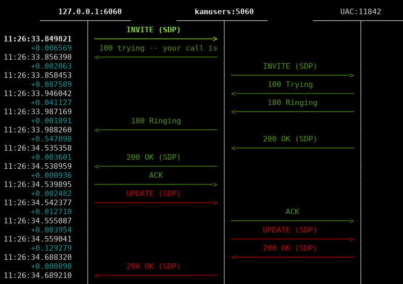

Analizando el tráfico SIP¶
A pesar de que todas las instalaciones en producción de IvozProvider mantenidas por Irontec incluyen un servidor Homer SIP Capture, éste no se incluye en la versión standalone de IvozProvider. El motivo es que somos partidarios de instalar el excepcional stack SIPCAPTURE en una máquina adicional.
El visor de mensajes SIP en Ncurses sngrep desarrollado por Irontec es en la actualidad la herramienta preferente para analizar el tráfico SIP de la solución.
sngrep¶
Capturar todo el tráfico SIP:
sngrep
Capturar solo el tráfico relativo a llamadas:
sngrep -c
Capturar SIP y RTP:
sngrep -c -r
Para más información, acceder a la página oficial del proyecto.